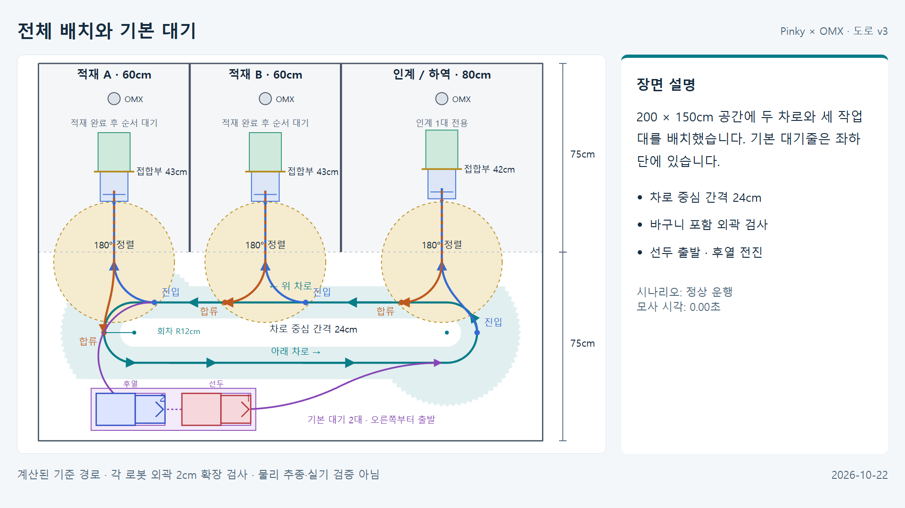
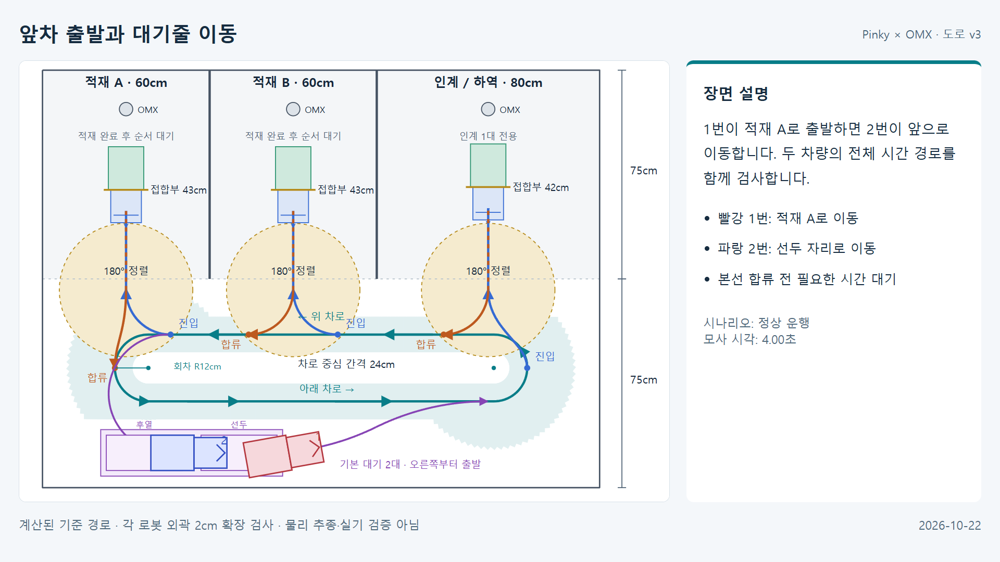
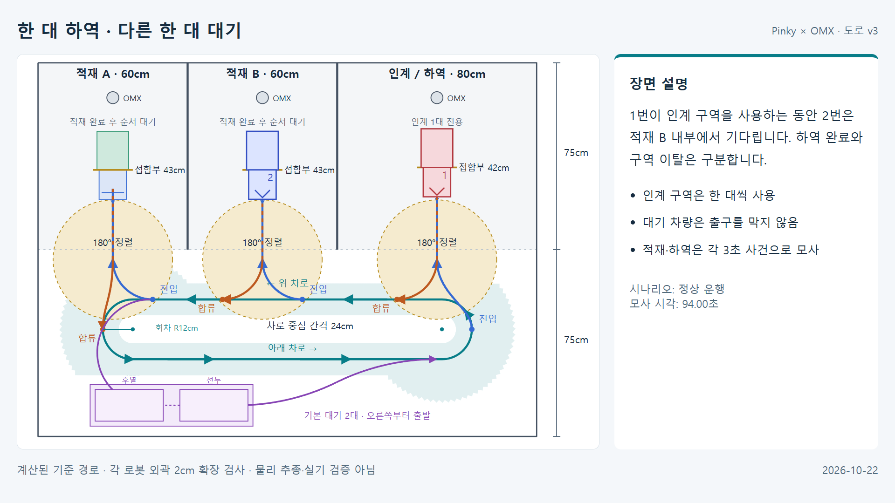
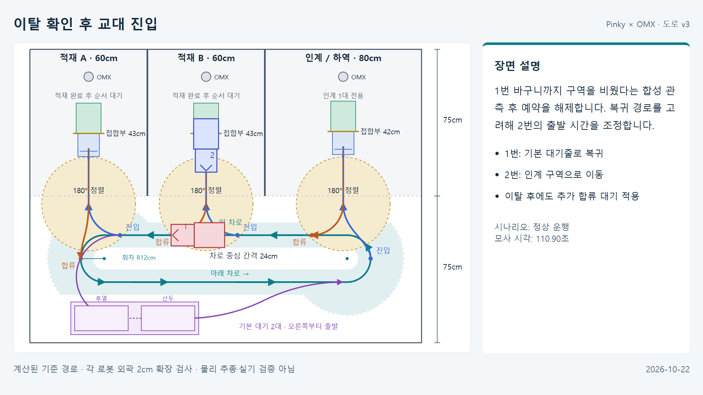
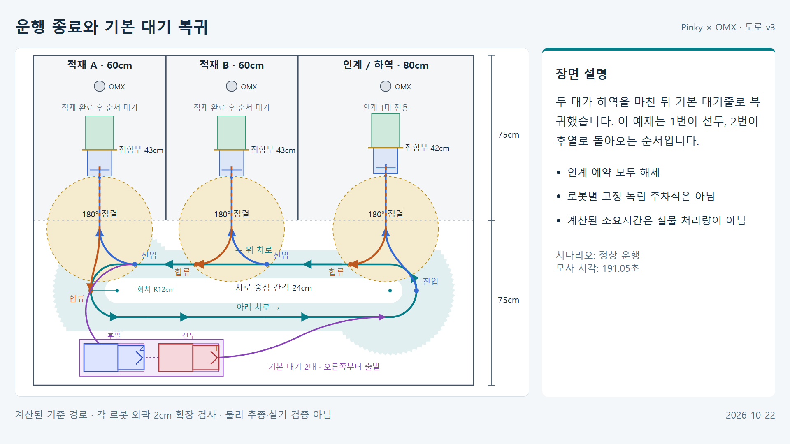
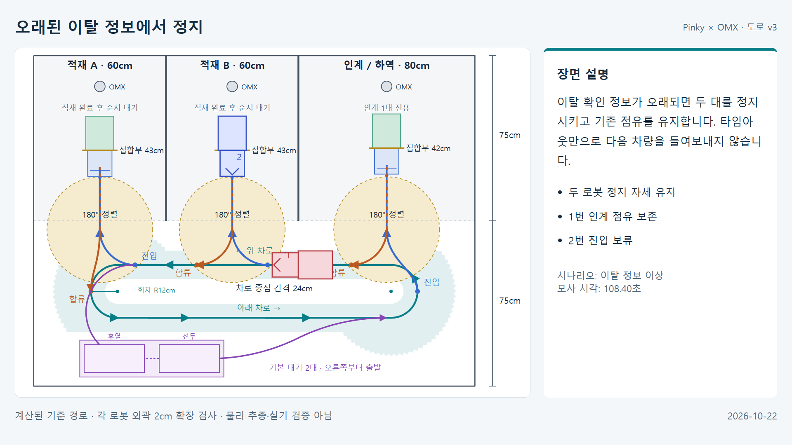

Pinky 도로 v3 · 이미지와 영상
2026-10-22 보관본 · 좌하단 기본 대기 / 적재 / 교대 하역 / 복귀
두 대의 3D 영상은 계산된 기준 경로를 Isaac에서 재생한 설명 자료입니다. 별도의 바퀴 구동 영상은 단일 로봇의 물리 시험입니다. 전체 물리 추종·실기 정밀주차 완료를 뜻하지 않습니다.
영상
기준 경로 3D 재생전체 운행 · 4배속
47.83초 · 1280×720 · H.264MP4 저장기준 경로 3D 재생대기줄·교대·이상 정지
25.54초 · 1280×720 · H.264MP4 저장단일 로봇 PhysX 시험단일 Pinky 바퀴 구동
10.00초 · 1280×720 · H.264MP4 저장 주요 장면 · 1920×1080 PNG
전체 배치와 기본 대기

200 × 150cm 공간에 두 차로와 세 작업대를 배치했습니다. 기본 대기줄은 좌하단에 있습니다.PNG 저장앞차 출발과 대기줄 이동

1번이 적재 A로 출발하면 2번이 앞으로 이동합니다. 두 차량의 전체 시간 경로를 함께 검사합니다.PNG 저장한 대 하역 · 다른 한 대 대기

1번이 인계 구역을 사용하는 동안 2번은 적재 B 내부에서 기다립니다. 하역 완료와 구역 이탈은 구분합니다.PNG 저장이탈 확인 후 교대 진입

1번 바구니까지 구역을 비웠다는 합성 관측 후 예약을 해제합니다. 복귀 경로를 고려해 2번의 출발 시간을 조정합니다.PNG 저장운행 종료와 기본 대기 복귀

두 대가 하역을 마친 뒤 기본 대기줄로 복귀했습니다. 이 예제는 1번이 선두, 2번이 후열로 돌아오는 순서입니다.PNG 저장오래된 이탈 정보에서 정지

이탈 확인 정보가 오래되면 두 대를 정지시키고 기존 점유를 유지합니다. 타임아웃만으로 다음 차량을 들여보내지 않습니다.PNG 저장Isaac 장면 · 보조 PNG
전체 도면 · 파일 해시와 검증 정보